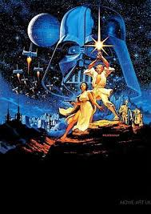

Welcome to the "Star Wars" Universe
Star Wars is a cultural phenomenon, a space opera that has captured hearts for over four decades. Created by George Lucas, this epic tale spans across multiple generations, blending mythology, philosophy, and cutting-edge technology. From its original trilogy to the prequels, sequels, and spin-offs, Star Wars has redefined cinema and storytelling in the modern age.
About the Film
Star Wars is a science fiction masterpiece that blends adventure, fantasy, and mythology. Released in 1977, the film was directed by George Lucas and has since become a cultural phenomenon. The Star Wars saga explores the eternal battle between good and evil in a vast, imaginative universe filled with unique characters, spaceships, and planets.